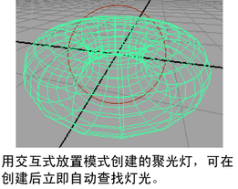

当创建新的聚光灯、区域光或平行光时，可以启用“交互式放置”(Interactive Placement)，以便在创建上述灯光之后可以自动浏览此灯光。然后，可以按住 Alt 键拖动（在 Mac OS X 上为按住 Option 键拖动）以翻滚光源并将其定位在所需的位置。
启用“交互式放置”(Interactive Placement)
- 选择创建 > 灯光 > 平行光(Create > Lights > Directional Light) >
 （或“聚光灯”(Spot Light)或“区域光”(Area Light)）。
（或“聚光灯”(Spot Light)或“区域光”(Area Light)）。
- 在“创建平行光选项”(Create Directional Light Options)中，启用 “交互式放置”(Interactive Placement)。
- 单击“创建”(Create)。
提示： 若要退出“交互式放置”(Interactive Placement)模式，可通过选择“面板 > 透视 > 透视”(Panels > Perspective > Persp)或通过单击工具箱中的某个布局按钮切换到透视视图。